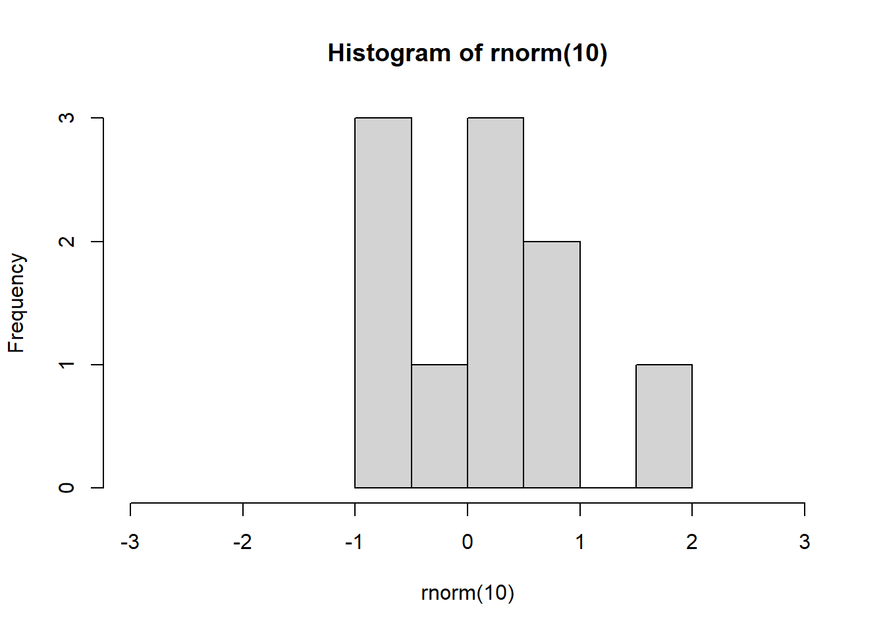
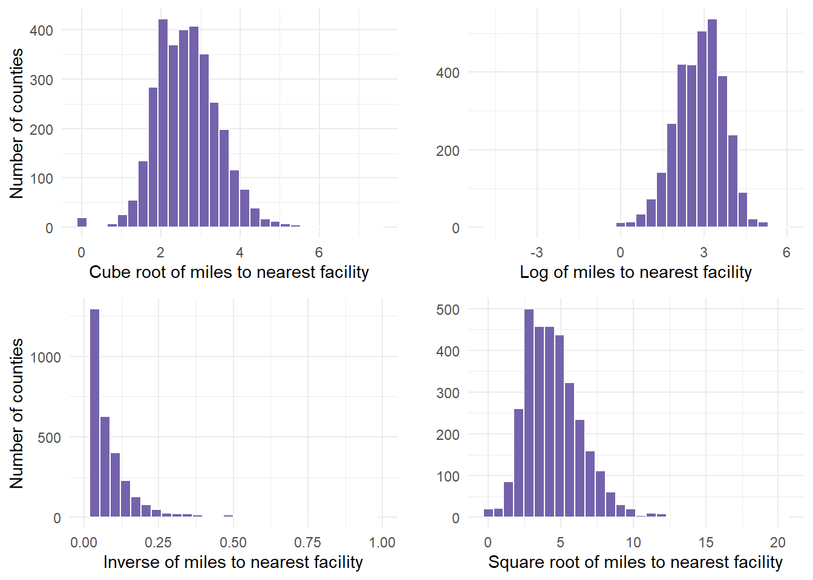

####################################
# Project name: Probability Distributions
# Data used: defects.csv, pdmp_2017.csv, opioidFacility.csv,
# brfss.csv from Blackboard
# Libraries used: tidyverse, gridExtra
####################################6 Probability and Probability Distributions
- The goal of this lesson is to teach you how to apply the basic rules of probability and discuss some probability distributions. You will also learn how to transform data via tidyverse alongside the power of the central limit theorem.
6.0.1 At a Glance
- In order to succeed in this lesson, you will need to learn the basic rules behind random events including how to calculate probability based on distribution. We focus on learning these skills with regards to the binomial distribution and the normal distribution, and in doing so move from learning about descriptive statistic to learning about inferential statistics. We will also learn the limitations of having a variable that is not normal, and how to transform it to be normal so that we can calculate probability using the same algorithms.
6.0.2 Lesson Objectives
- Define and use probability distributions to infer from a sample.
- Compute and interpret z-scores to compare observations to groups.
- Estimate population means from sample means using the normal distribution.
6.0.3 Consider While Reading
- As you engage with the lesson, pay attention to the key concepts and how those concepts are applied. There are rules for calculating and combining probabilities that are important for you to know to solve the problem sets and to solve real-life problems. Take note of the applicability of the normal distribution, which is a major cornerstone for statistical analysis.
- In this lesson, we move from simply describing data to making inferences. There are so many ways to calculate probability. The assigned readings focus on helping you learn and understand two of the most common distributions: the binomial distribution and the normal distribution. In doing so, we learn about random variables, sampling, and the importance of setting the seed. We also find z-scores, which will turn out to be very important for our future studies. Next, we focus on the utility of the transformation section, which allows us to use the rules and practices regarding a normal distribution, assuming that at least one transformation was successful into reshaping the quantitative variable into a normally-shaped distribution.
6.1 Some Common Statistics Terms
Statistical inference is one of the foundational ideas in statistics. Since it is often impossible to collect information on every single person or organization, scientists take samples of people or organizations and examine the observations in the sample. Inferential statistics are then used to take the information from the sample and use it to understand (or infer to) the population. In conducting probability calculations, we can make inferences to understand the probability associated with the population.
Researchers often work with samples instead of populations, where samples are subsets of different populations. In the case of the state data on opioid policies that your book discusses, all states are included, so this is the entire population of states. Statisticians sample from the population to understand the probabilities associated with it.
When selecting a sample, we hope to select a representative sample from the population, and use properties of the normal distribution to understand what is likely happening in the whole population. A normal distribution is one of the most fundamental distributions to use in calculating probabilities. We will look at both discrete and normal distributions, but also seek to understand how a normal distribution and the central limit theorem can help us shed light on many statistics we are inferring.
6.2 Probability Distribution
A probability distribution is the numeric or visual representation of the set of probabilities that each value or range of values of a variable occurs.
Two important characteristics:
- The probability of each real value of some variable is non-negative. Instead, it is either 0 or positive. More specifically, the probability of each value x is a value between 0 and 1. Or equivalently. \(0 <= P(X=x) <= 1\).
- The sum of the probabilities of all possible values of a variable is 1.
Consider the probability distribution that reflects the number of credit cards that a bank’s customers carry.
NumberOfCards Percentage
1 0 2.5%
2 1 9.8%
3 2 16.6%
4 3 16.5%
5 4 or more 54.6Given the characteristics of a probability distribution, we can ask whether this is a valid probability distribution.
- Yes, because \(0 <= P(X=x) <= 1\) and the sum of the percentages is 1.
0.025 + 0.098 + 0.166 + 0.165 + 0.546[1] 1Second, with the information in the table, we can calculate a number of things, like the probability that a reader carries no credit cards.
- \(P(X=0)= .025\)
The probability that a reader carries fewer than two credit cards.
- \(P(X<2)= P(X=0)+P(X=1)= .025 +.098= .123\)
The probability that a reader carries at least two credit cards.
- \(P(X>=2) = P(X=2)+P(X=3)+P(X=4) = .166+.165+.546= .877\)
- Or \(1-P(X<2) = 1-.123 = .877\)
Because of the 2 characteristics of a probability distribution, sometimes there are a couple ways to calculate the correct answer, like we did above with either calculating probabilities associated with above a value, or beneath and equal to a value knowing that the total sum of all probabilities is 1.
When you produce a percentage, you multiple the calculated probability by 100, so instead of finding a value between 0 and 1, you find a percentage between 0% and 100%. This means that if you use the pnorm function to calculate a probability, you can multiple that probability by 100 to get the percentage.
When you produce the value given a probability calculation, you multiply the probability calculated by the sample size (n).
6.2.1 Random Variables
A Random Variable is a function that assigns numerical values to the outcomes of a random experiment.
Denoted by uppercase letters (e.g., \(X\) ).
Corresponding values of the random variable: \(x_1,x_2, x_3,...\)
Random variables may be classified as:
- Discrete - The random variable assumes a countable number of distinct values.
- Discrete probability distributions show probabilities for variables that can only have certain values, which includes categorical variables and variables that must be measured in whole numbers like number of people texting during class.
- The Binomial Distribution is a discrete distribution that evaluates the probability of a “yes” or “no” outcome occurring over a given number of trials
- Continuous - The random variable is characterized by (infinitely) uncountable values within any interval.
- Continuous probability distributions show probabilities for values, or ranges of values, of a continuous variable that can take any value in some range.
- The Normal Distribution is a continuous distribution and is the most important of all probability distributions. Its graph is bell-shaped and this bell-shaped curve is used in almost all disciplines.
For example, consider an experiment in which two shirts are selected from the production line and each is either defective (D) or non-defective (N).
- Since only 2 shirts are selected, here is the sample space, which are all the available options: \({(D,D), (D,N), (N,D), (N,N)}\)
- The random variable X is the number of defective shirts.
- The possible number of defective shirts is the set \(X={0,1,2}\),
- Since these are the only countable number of possible outcomes, this is a discrete random variable.
6.2.2 Useful Commands for Random Variables
- set.seed() command is useful when conducting random sampling since it will result in the same sample to be taken each time the code is run, which makes sampling more reproducible.
- We briefly looked at this when making our density plot with random normal data using the rnorm() command.
- sample_n() command can be used to take a sample. The arguments for sample_n() are size = which is where to put the size of the sample to take and replace = which is where you choose whether or not you want R to sample with replacement (replacing each value into the population after selection, so that it could be selected again) or without replacement (leaving a value out of the sampling after selection).
- Let’s look at an example using the pdmp_2017.csv file.
# Load tidyverse
library(tidyverse)- Below, I am using the read.csv() command to read in the data set and use strings as factors = TRUE to ensure character variables are coerced as factors. This helps bypass the need to coerce later on. We do need to note that it will change all string variables to factors with the TRUE parameter.
opioidpolicy <- read.csv("data/pdmp_2017.csv", stringsAsFactors = TRUE)
# Set a starting value for sampling
set.seed(3)
# Sample 25 states and save as sample and check summary
Sample <- sample_n(opioidpolicy, size=25, replace=FALSE)
summary(Sample$Required.Use.of.Prescription.Drug.Monitoring.Programs) No Yes
8 17 - You should have the same answers as I do above (8 No’s, and 17 Yes’s) because we set the same seed. If you don’t, I mention the reason below at the end of this short sampling experiment.
# Sample another 25 states and check summary.
# Note the different answer than above.
Sample <- sample_n(opioidpolicy, size=25, replace=FALSE)
summary(Sample$Required.Use.of.Prescription.Drug.Monitoring.Programs) No Yes
14 11 # Sample another 25 states and check summary
# Again, note the differences in numbers each time.
Sample <- sample_n(opioidpolicy, size=25, replace=FALSE)
summary(Sample$Required.Use.of.Prescription.Drug.Monitoring.Programs) No Yes
12 13 # Sample another 25 states and check summary using same set seed as our first run (3).
set.seed(3)
Sample <- sample_n(opioidpolicy, size=25, replace=FALSE)
summary(Sample$Required.Use.of.Prescription.Drug.Monitoring.Programs) No Yes
8 17 - Again, you should have the same numbers as I do above, and these numbers should be equivalent to our first run (8 No’s, and 17 Yes’s). If you don’t have the same numbers as me is possible that your random number generator is on a different setting. Post R version 3.6.0 or later, we should be on Rejection sample.kind. The next line sets the RNGkind().
RNGkind(sample.kind = "Rejection")
# Run the same code again as above for replication results
set.seed(3)
Sample <- sample_n(opioidpolicy, size=25, replace=FALSE)
summary(Sample$Required.Use.of.Prescription.Drug.Monitoring.Programs) No Yes
8 17 6.2.3 Summary Measures for a Random Variable
6.2.3.1 Expected Value
- We can calculate the expected value, or value we think is going to occur based on the type of distribution.
- Expected value is also known as the population mean \(\mu\), and is the weighted average of all possible values of \(X\).
- More specifically, \(E(X)\) is the long-run average value of the random variable over infinitely many independent repetitions of an experiment.
- For a discrete random variable \(X\) with values \(x_1, x_2, x_3, ...\) that occur with probabilities \(P(X=x_i)\), the expected value of \(X\) is the probability weighted average of the values. In the case of one random variable, that means: \(E(X) = \mu = \sum{x_iP(X=x_i)}\)
6.2.3.2 Variance
- Variance of a random variable is the average of the squared differences from the mean.
- For a discrete random variable \(X\) with values \(x_1, x_2, x_3, ...\) that occur with probabilities \(P(X=x_i)\), the variance is defined as: \(Var(X) = \sigma^2 = \sum{(x_i-\mu)^2*P(X=x_i)}\)
6.2.3.3 Standard Deviation
- Standard deviation is consistently the square root of the variance. \(SD(X) = \sigma = \sqrt{\sigma^2} = \sqrt{\sum{(x_i-\mu)^2*P(X=x_i)}}\)
6.2.4 Example of Summary Measures for a Random Variable
defectdata <- read.csv("data/defects.csv")
head(defectdata) SerialNumber NumDefects
1 1 6
2 2 6
3 3 0
4 4 1
5 5 6
6 6 6str(defectdata)'data.frame': 500 obs. of 2 variables:
$ SerialNumber: int 1 2 3 4 5 6 7 8 9 10 ...
$ NumDefects : int 6 6 0 1 6 6 7 0 3 2 ...# Calculate the probability of the defective pixels per monitor for
# each member of the sample space [0, 1, 2, 3, 4, 5, 6, 7].
sampleSpace <- 0:7
frequency <- table(defectdata$NumDefects)
frequency
0 1 2 3 4 5 6 7
49 47 62 83 60 65 66 68 proportions <- prop.table(frequency)
proportions
0 1 2 3 4 5 6 7
0.098 0.094 0.124 0.166 0.120 0.130 0.132 0.136 cumulativeproportions <- cumsum(prop.table(proportions))
cumulativeproportions 0 1 2 3 4 5 6 7
0.098 0.192 0.316 0.482 0.602 0.732 0.864 1.000 - Once we calculate vectors for the frequency table, we bind them together and transpose them into columns and combine them into a data frame.
Defects <- t(rbind(sampleSpace, frequency, proportions, cumulativeproportions))
Defects <- as.data.frame(Defects)
str(Defects)'data.frame': 8 obs. of 4 variables:
$ sampleSpace : num 0 1 2 3 4 5 6 7
$ frequency : num 49 47 62 83 60 65 66 68
$ proportions : num 0.098 0.094 0.124 0.166 0.12 0.13 0.132 0.136
$ cumulativeproportions: num 0.098 0.192 0.316 0.482 0.602 0.732 0.864 1- Next, we calculate summary statistics based on the formulas above.
# How many defects should the manufacturer expect per monitor? E(X)?
ExDefects <- sum(Defects$sampleSpace * Defects$proportions)
ExDefects #3.714[1] 3.714# Variance of the number of defects per monitor?
deviations <- (Defects$sampleSpace - ExDefects)^2 * Defects$proportions
deviations[1] 1.35179201 0.69238482 0.36428670 0.08462614 0.00981552 0.21499348 0.68980507
[8] 1.46850026varDefects <- sum(deviations)
varDefects #4.876204[1] 4.876204# Standard deviation of the number of defects per monitor?
stDefects <- sqrt(varDefects)
stDefects #2.208213[1] 2.2082136.3 The Binomial Distribution
The binomial distribution is a discrete probability distribution and applies to probability for binary categorical variables with specific characteristics.
Properties of a binomial random variable:
- A variable is measured in the same way \(n\) times, signifying that \(n\) is the sample size.
- There are only two possible values of the variable, often called “success” and “failure”
- Each observed value is independent of the others.
- The probability of “success”, \(p\), and the probability of “failure”, \(1-p\), is the same for each observation, so each time the trial is repeated, the probabilities of success and failure remain the same.
- The random variable is the number of successes in \(n\) measurements.
6.3.1 Summary Measures for a Binomial Random Variable
Expected value, variance, and standard deviation were introduced and defined in section 2. We can take derivatives of the formulas to simplify our calculations given knowing a \(n\) and \(p\).
The formula for the expected value of a binomial random variable expands from \(\sum{x_iP(X=x_i)}\) to \(= n*p\).
The variance of a binomial random variable expands from \(\sum{(x_i-\mu)^2*P(X=x_i)}\) to \(= n*p*(1-p)\)
The standard deviation a binomial random variable expands from \(\sqrt{\sum{(x_i-\mu)^2*P(X=x_i)}}\) to \(= \sqrt{np*(1-p)}\)
Example summary statistics of a binomial random variable
- A current WM student has a career free-throw percentage of 89.4%. Suppose he shoots six free throws in tonight’s game. What is the expected number of free throws that he will make?
ex <- 6 * 0.894 ex[1] 5.364varx <- 6 * 0.894 * (1 - 0.894) varx[1] 0.568584sdx <- sqrt(varx) sdx[1] 0.7540451If the student shoots 6 free throws and typically makes 89.4% of them, we can multiply those two values together for the expected value, 5.364. We also find that this data has a variance of .568584 and standard deviation of .754051.
6.3.2 The Probability Mass Function
- The Probability Mass Function for a discrete random variable X is a list of the values of X with the associated probabilities, that is, the list of all possible pairs: \((X, P(X=x))\)
- A probability mass function computes the probability that an exact number of successes happens for a discrete random variable, given \(n\) and \(p\) defined above.
- Distribution of probabilities of different numbers of successes.
- A probability mass function is used to describe discrete random variables in a binomial distribution.
- Every random variable is associated with a probability distribution that describes the variable completely.
- Uses dbinom() command to calculate in R.
- Example using the probability mass function: Approximately 20% of U.S. workers are afraid that they will never be able to retire. Suppose 10 workers are randomly selected. What is the probability that none of the workers is afraid that they will never be able to retire?
- Again, we can use the dbinom() command to calculate this in R given x = none or 0, size = 10 workers, or just 10, and prob = 20% or .2. We write this command as listed below.
# P(X=0)
dbinom(0, 10, 0.2)[1] 0.1073742- The answer suggests that there is a .107 or 10.737% chance that no workers think they won’t be able to retire.
6.3.3 Cumulative Distribution Function
- Another way to look at a probability distribution is to examine its cumulative probability distribution. Here, you can determine the probability of getting some range of values, which is often more useful than finding the probability of one specific number of successes.
- A cumulative distribution function may be used to describe either discrete or continuous random variables.
- The cumulative distribution function for X is defined as: \(P(X<=x)\)
- The less than and equal to sign is the standard way to look at the cumulative distribution function. You can calculate >, >=, < from \(P(X<=x)\) given the two rules of probability discussed above.
- \(0 <= P(X=x) <= 1\)
- The sum of the probabilities of all possible values of a variable is 1
- Uses pbinom() command to calculate in R with the default value of lower.tail = TRUE is for n or fewer successes
- Can change lower.tail parameter to lower.tail = FALSE is computing higher than n rather than n or higher.
- Example using the cumulative distribution function, Approximately 20% of U.S. workers are afraid that they will never be able to retire. Suppose 10 workers are randomly selected. What is the probability that less than 3 of the workers are afraid that they will never be able to retire?
- We can use the pbinom() command to calculate this in R given q = less than 3 or <=2, size = 10 workers, or just 10, and prob = 20% or .2. We write this command as listed below.
# P(X<3) or P(X<=2)
pbinom(2, 10, 0.2)[1] 0.6777995- Or likewise, we could use multiple dbinom() commands to get individual probabilities and add them up. This statement is much longer, but does give you the same answer. Examine the figure below to see why.
dbinom(0, 10, 0.2) + dbinom(1, 10, 0.2) + dbinom(2, 10, 0.2)[1] 0.6777995
6.3.4 Variations in binom() Command
- In order to find \(P(X = 70)\) given 100 trials and .68 probability of success, we enter:
# P(X = 70)
dbinom(70, 100, 0.68)[1] 0.07907911- In order to find \(P(X <= 70)\), given 100 trials and .68 probability of success, we enter:
# P(X <= 70)
pbinom(70, 100, 0.68)[1] 0.7006736- In order to find \(P(X < 70)\), given 100 trials and .68 probability of success, we enter:
# P(X < 70)
pbinom(69, 100, 0.68)[1] 0.6215945- In order to find \(P(X > 70)\), given 100 trials and .68 probability of success, we enter:
# P(X > 70)
pbinom(70, 100, 0.68, lower.tail = FALSE)[1] 0.2993264- In order to find \(P(X >= 70)\), given 100 trials and .68 probability of success, we enter:
# P(X >= 70)
pbinom(69, 100, 0.68, lower.tail = FALSE) #Or[1] 0.37840551 - pbinom(69, 100, 0.68)[1] 0.3784055- Examples of binomial distribution calculations in a word problems: A current WM student has a career free-throw percentage of 90.3%. Suppose he shoots five free throws in tonight’s game. What is the probability that he makes all five free throws?
# P(X=5)
dbinom(5, 5, 0.903)[1] 0.6003973- What is the percentage that he makes all five free throws?
# P(X=5)
dbinom(5, 5, 0.903) * 100 #60.04%[1] 60.03973- A current WM student has a career free-throw percentage of 80.5%. Suppose he shoots six free throws in tonight’s game. What is the probability that he makes five or more of his free throws?
# P(X>=5)
pbinom(4, 6, 0.805, lower.tail = FALSE)[1] 0.6676464# Or
dbinom(5, 6, 0.805) + dbinom(6, 6, 0.805)[1] 0.6676464- What is the percentage that he makes five or more of his free throws?
# P(X>=5)
pbinom(4, 6, 0.805, lower.tail = FALSE) * 100 # 66.76%[1] 66.76464- Thirty five percent of consumers with credit cards carry balances from month to month. Six consumers with credit cards are randomly selected. What is the probability that fewer than two consumers carry a credit card balance?
# P(X<=2)
dbinom(0, 6, 0.35) + dbinom(1, 6, 0.35)[1] 0.3190799# Or
pbinom(1, 6, 0.35)[1] 0.3190799- What is the percentage that fewer than two consumers carry a credit card balance?
pbinom(1, 6, 0.35) * 100 #31.9%[1] 31.907996.4 The Continuous Distribution
- Properties of a Continuous Random Variable
- The random variable is characterized by (infinitely) uncountable values within any interval.
- Because of the definition infinite uncountable, When computing probabilities for a continuous random variable, \(P(X=x)=0\)
- Therefore, we cannot assign a nonzero probability to each infinitely uncountable value and still have the probabilities sum to one.
- Thus, \(P(X=a)\) and \(P(X=b)\) both equal zero, and the following holds for continuous random variables: \(P(a <= X <= b) = P(a < X < b) = P(a <= X < b) = P(a < X <= b)\).
- This is important to consider and compare to discrete probability.
6.4.1 Density Functions for Continuous Distributions
6.4.1.1 Probability Density Function
- The Probability Density Function is used to describe continuous random variables.
- Probability Density Function \(f(x)\) of a continuous random variable X describes the relative likelihood that \(X\) assumes a value within a given interval (e.g., \(P(a<=X<=b)\), where \(f(x)>=0\) for all possible values of \(X\) and the area under \(f(x)\) over all values of \(x\) equals one.
6.4.1.2 Cumulative Density Function
The Cumulative Density Function \(F(x)\) of a continuous random variable X suggests that for any value x of the random variable X, the cumulative distribution function \(F(x)\) is computed as, \(F(x) = P(X <= x)\) as a result, \(P(a<=X<=b) = F(b)- F(a)\).
The goal of cumulative distributions is to find the area under the curve. The pnorm() function computes the probability at point q to find the area under the curve.
- Three arguments of the pnorm() command:
- q is the value of interest;
- The mean (mean);
- The standard deviation (sd);
Also an optional lower.tail parameter, which is defaulted to TRUE signifying < or <=.
We can also work backwards to find a value given a probability. The qnorm() function computes the quantile value at p to find the value associated with a probability.
- Three arguments of the qnorm() command:
- p is the cumulative probability;
- The mean (mean);
- The standard deviation (sd);
Also an optional lower.tail parameter, which is defaulted to TRUE signifying < or <=.
6.4.2 The Normal Distribution
The normal distribution serves as the cornerstone of statistical inference.
Data is symmetric about its mean.
Mean=Median=Mode.
The distribution is bell-shaped.
The distribution is asymptotic, which means that the tails get closer and closer to the horizontal axis, but never touch it.
Closely approximates the probability distribution of a wide range of random variables, such as the following:
- Heights and weights of newborn babies.
- Scores on SAT.
- Cumulative debt of college graduates.
The normal distribution is completely described by two parameters: population mean \(\mu\), which describes the central location of the distribution,and population variance \(\sigma^2\), which describes the dispersion of the distribution.
- A special case of the normal distribution:
- Mean is equal to zero (E(Z) = 0).
- Standard deviation is equal to one (SD(Z) = 1).
# Solving the figure above using the pnorm() command in R. P(Z<=0)
pnorm(q = 0, mean = 0, sd = 1)[1] 0.5# Or the following because the default value of the mean and sd are 0
# and 1.
pnorm(0)[1] 0.5If we assume a mean of 0 and a standard deviation of 1, and we are looking for the probability when the mean is 0, we will get a .5 probability or 50 percent (.5*100). This is because the curve is normal with identical sides.
We can also solve this backwards. Below is the qnorm() command, which solves the figure above looking at probability instead of values.
# P(Z >= z) = .5
qnorm(0.5, 0, 1)[1] 0# Or
qnorm(0.5)[1] 06.4.3 Empirical Rule
Chevyshev’s Theorem states that at least \(1 - 1/z^2\)% of the data lies between \(z\) standard deviations from the mean. This result does not depend on the shape of the distribution.
With a normal distribution, we can assume approximately the following under the empirical rule:
- 68% of values within one SD of the mean;
- 95% of values within two SD of the mean;
- 99.7% of values within three SD of the mean.

6.4.4 Calculating z-scores
A z-score allows description and comparison of where an observation falls compared to the other observations for a normally distributed variable.
A z-score is calculated as the number of standard deviations an observation is away from the mean.
A normally distributed variable can be used to create z-scores.
The \(x_i\) represents the value of variable \(x\) for a single observation, \(\mu_x\) is the mean of the \(x\) variable, \(\sigma_x\) is the standard deviation of the \(x\) variable. So, \(z_i\) is the difference between the observation value and the mean value for a variable and is converted by the denominator into standard deviations. The final z-score for an observation is the number of standard deviations it is from the mean. \[z_i = (x_i - \mu_x)/\sigma_x\].
A z score or z value specifies by how many standard deviations the corresponding x value falls above (z > 0) or below (z < 0) the mean.
- A positive z indicates by how many standard deviations the corresponding x lies above mean.
- A zero z indicates that the corresponding x equals mean.
- A negative z indicates by how many standard deviations the corresponding x lies below mean.
Example of a z-score calculation: Scores on a management aptitude exam are normally distributed with a mean of 72 and a standard deviation of 8.
- What is the probability that a randomly selected manager will score above 60?
- First, we could transform the random variable X to Z score using the transformation formula:
(60 - 72)/8[1] -1.5- Then, you can calculate the probability using the standard normal distribution, which has a mean of 0 and a standard deviation of 1.
# P(Z > -1.5)
pnorm(-1.5, 0, 1, lower.tail = FALSE)[1] 0.9331928# Or similarly, we could use the line below because of the default
# values associated with the pnorm() command
pnorm(-1.5, lower.tail = FALSE)[1] 0.9331928- Also, because R handles the standard normal transformation on our behalf with its inclusion of parameters, we can use the pnorm() command with the mean and standard deviation provided above to calculate the probability in less steps.
# Note the same answer as above. P(X > 60)
pnorm(60, 72, 8, lower.tail = FALSE)[1] 0.9331928To answer the question, there is a 0.933 probability or a 93.3% chance that a randomly selected manager will score above a 60 on the managerial aptitude exam.
In order to get the percentage in R, we simply multiply the answer by 100.
pnorm(60, 72, 8, lower.tail = FALSE) * 100[1] 93.319286.4.5 Finding Utility in Calculating Probability
- Example using pnorm() with Word Problems: Suppose the life of a particular brand of laptop battery is normally distributed with a mean of 6 hours and a standard deviation of 0.9 hours. Use R to calculate the probability that the battery will last more than 8 hours before running out of power and document that probability below.
# P(X > 8)
pnorm(8, 6, 0.9, lower.tail = FALSE)[1] 0.01313415- The time for a professor to grade a student’s homework in business statistics is normally distributed with a mean of 15 minutes and a standard deviation of 3.5 minutes. What is the probability that randomly selected homework will require less than 16 minutes to grade?
# P(X < 16)
pnorm(16, 15, 3.5)[1] 0.6124515- What percentage of randomly selected homeworks will require less than 16 minutes to grade?
pnorm(16, 15, 3.5) * 100[1] 61.245156.4.6 Finding Probability Between Two Values
- We mentioned above that in order to find probability between 2 values a and b, we could use the following equation: \(P(a<=X<=b) = F(b)- F(a)\).
- To use this formula, find P(−1.52 <= Z <= 1.96). This would equal P(Z<=1.96)−P(Z<=−1.52) given a standard normal random variable Z we get the commands below.
# P(Z <= 1.96) - P(Z <= -1.52)
pnorm(1.96, 0, 1) - pnorm(-1.52, 0, 1)[1] 0.91074666.4.7 Finding Value Given a Probability
- We use R’s pnorm() and qnorm() commands to solve problems associated with the normal distribution.
- If we want to find a particular x value for a given cumulative probability (p), then we enter “qnorm(p, μ, σ)”.
# P(X > x) = 0.10
qnorm(0.9, 7.49, 6.41)[1] 15.70475# or
qnorm(0.1, 7.49, 6.41, lower.tail = FALSE)[1] 15.704756.4.8 Finding Utility in Calculating Values from Probability
- Example of qnorm() with Word Problems: The stock price of a particular asset has a mean and standard deviation of $58.50 and $8.25, respectively. What is the 95th percentile of this stock price?
# P(X<=x) =.95
qnorm(0.95, 58.5, 8.25)[1] 72.07004- The salary of teachers in a particular school district is normally distributed with a mean of $50,000 and a standard deviation of $2,500. Due to budget limitations, it has been decided that the teachers who are in the top 2.5% of the salaries would not get a raise. What is the salary level that divides the teachers into one group that gets a raise and one that does not?
# P(X>=x) =.025
qnorm(0.025, 50000, 2500, lower.tail = FALSE)[1] 54899.91- You are planning a May camping trip to a National Park in Alaska and want to make sure your sleeping bag is warm enough. The average low temperature in the park for May follows a normal distribution with a mean of 32°F and a standard deviation of 8°F. Above what temperature must the sleeping bag be suited such that the temperature will be too cold only 5% of the time?
# P(X<=x) =.05
qnorm(0.05, 32, 8)[1] 18.841176.5 Central Limit Theorem (CLT)
CLT refers to the fact that, in many situations, when independent random variables are summed up, their properly normalized sum tends toward a normal distribution even if the original variables themselves are not normally distributed. Therefore, CLT suggests that for any population X with expected value \(\mu\) and standard deviation \(\sigma\) the sampling distribution of \(X\) will be approximately normal if the sample size \(n\) is sufficiently large.
The CLT tells us that, regardless of the original distribution of a population, the sampling distribution of the sample mean approaches a normal distribution as the sample size gets larger. We use the CLT when we want to estimate population parameters (like the mean) from sample data and apply techniques that rely on normality, such as confidence intervals and hypothesis testing. This allows us to make inferences about the population using the normal distribution even when the population itself isn’t normally distributed.
The Central Limit Theorem (CLT) holds true for continuous variables, regardless of whether they are normally distributed or not. Generally, the normal distribution approximation is justified when the sample size is sufficiently large, typically \(n≥30\). If the sample means are approximately normal, we can transform them into a standard normal form. The standard deviation of the sample means (also called the standard error) can be estimated using the population standard deviation and the sample size that makes up the distribution.
If \(\bar{X}\) is approximately normal, then we can transform it using an updated formula of the z-score formula with standard error \(𝑍=(𝑋- \mu)/(\sigma/\sqrt(n))\)
Next, we want to create an experiment where we simulate why the CLT holds true. The rnorm() command pulls random data from a normal distribution. However, even when the sample is small, it can appear not normal - even though it is from a normal distribution.
set.seed(1)
# Sample of n = 10
hist(rnorm(10), xlim = c(-3, 3))
- If we increase the sample size, we should all see a nice normal bell shape distribution like the one below.
set.seed(1)
# Sample of n = 1000
hist(rnorm(1000), xlim = c(-3, 3))
The x limits are set from -3 to 3 because a normal distribution follows the empirical rule discussed above (almost all data is within 3 sd of the mean).
Relating this to the CLT, the CLT states that the sum or mean of a large number of independent observations from the same underlying distribution has an approximate normal distribution. If we were to take a 6 sided dice, in any given roll, we would expect the average. This means that the expected value E(X) will be the mean as discussed above.
# Creating a sample
d <- 1:6
# Calculating the expected value E(X) which equals the population
# mean
mean(d) #3.5[1] 3.5- Rolling a dice only one time would not give us enough data to assume a normal distribution under the CLT. However, if we were to roll a higher number of times, and repeat that experiment \(n\) number of times, we would expect that as \(n\) grows, we would approach a normal distribution.
# First, let's roll the dice 1000 times. We would expect the average
# like shown below.
set.seed(1)
NumberofRolls <- 1000
x <- sample(d, NumberofRolls, replace = TRUE)
# The mean(x) is 3.514 and our mean of 1 through 6 is 3.5. We
# estimated about the average.
mean(x)[1] 3.514hist(x)
- Next, if we repeat the dice roll experiment that we ran 1,000 times above, we can see the normal distribution start to take shape. The example below has a loop for simulation purposes. This loop rolls x with allowed values 1 to 6 - 1,000 times - and then does that 100 times. The more we do this, the closer we get to approximating the mean (3.5) as our histogram starts to get more narrow.
set.seed(1)
t <- 0
for (i in 1:100) {
NumberofRolls <- 1000
x <- sample(d, NumberofRolls, replace = TRUE)
t[i] <- mean(x)
}
hist(t, xlim = c(3, 4))- Important to note that for any sample size \(n\), the sampling distribution of \(\bar{x}\) is normal if the population X from which the sample is drawn is normally distributed, meaning, there is no need to use CLT.
6.6 Standard Error (SE)
The \(SE\) is the standard deviation of the sampling distribution for all samples of size \(n\).
It is unusual to have the entire population for computing the population standard deviation, and it is also unusual to have a large number of samples from one population. A close approximation to this value is called the standard error of the mean. \(SE=sd/\sqrt(n)\).
Standard Deviation vs. Standard Error
- SD: Measure of variability in the sample.
- SE: Estimate of how closely the sample represents the population.
The standard deviation measures the spread of individual data points, while the standard error measures the spread of sample means.
The standard deviation and standard error are both measures of variability but are used in different contexts and serve different purposes. The standard deviation quantifies the spread of individual data points within a dataset. It is often used when analyzing the distribution of a single sample or population. On the other hand, the standard error is a measure of the precision of the sample mean in estimating the population mean. It tells us how much the sample mean is likely to vary from the true population mean if we were to take repeated samples. The standard error is derived from the standard deviation but is scaled by the square root of the sample size, meaning it decreases as the sample size increases. This makes it particularly useful in inferential statistics, where it helps assess the accuracy of estimates based on sample data.
Example using SD: Given that \(\mu\) = 16 inches and \(\sigma\) = 0.8 inches, determine the following: What is the probability that a randomly selected pizza is less than 15.5 inches?
# P(X < 15.5)
pnorm(15.5, 16, 0.8)[1] 0.2659855Example using SE: What is the probability that 2 randomly selected pizzas average less than 15.5 inches?
- \(P(\bar{X} < 15.5)\)
pnorm(15.5, 16, 0.8/sqrt(2))[1] 0.1883796Additional Examples using SE:
- Anne wants to determine if the marketing campaign has had a lingering effect on the amount of money customers spend on coffee. Before the campaign, \(\mu\) = $4.18 and \(\sigma\) = $0.84. Based on 50 customers sampled after the campaign, \(\mu\) = $4.26.
- \(P(\bar{X} > 4.26)\)
pnorm(4.26, 4.18, 0.84/sqrt(50), lower.tail = FALSE)[1] 0.2503353- Over the entire six years that students attend an Ohio elementary school, they are absent, on average, 28 days due to influenza. Assume that the standard deviation over this time period is \(\sigma\) = 9 days. Upon graduation from elementary school, a random sample of 36 students is taken and asked how many days of school they missed due to influenza. What is the probability that the sample mean is between 25 and 30 school days?
\(P(\bar{X} < 30)-P(\bar{X} < 25)\)
pnorm(30, 28, 9/sqrt(36)) - pnorm(25, 28, 9/sqrt(36))[1] 0.8860386- According to the Bureau of Labor Statistics, it takes an average of 22 weeks for someone over 55 to find a new job. Assume that the probability distribution is normal and that the standard deviation is two weeks. What is the probability that eight workers over the age of 55 take an average of more than 20 weeks to find a job?
- \(P(\bar{X} >20)\)
pnorm(20, 22, 2/sqrt(8), lower.tail = FALSE)[1] 0.99766116.7 Sampling Distribution of the Sample Proportion
- Estimator Sample proportion \(\bar{P}\) is used to estimate the population parameter \(p\).
- Estimate: A particular value of the estimator \(\bar{p}\).
- The expected value of \(\bar{P}=E(\bar{P})=𝑝\).
- The standard deviation of \(\bar{P}\) is referred to as the standard error of the sample proportion, which equals \(se(\bar{P}) = \sqrt(p*(1-p)/n\).
- The Central Limit Theorem for the Sample Proportion.
- For any population proportion \(p\), the sampling \(\bar{P}\) is approximately normal if the sample size \(n\) is sufficiently large.
- As a general guideline, the normal distribution approximation is justified when \(n*p>=5\) and \(n((1-p)>=5\).
- If \(\bar{P}\) is normal, we can transform it into the standard normal random variable as \(Z=(\hat{P}-E(\bar{P})/se(\bar{P})\) = \((\bar{P}-p)/(\sqrt(p*(1-p)/n))\).
- Using the pnorm() function, this would translate to the following: \(pnorm(\hat{P}, E(\bar{P}), se(\bar{P})\) , where \(se(\bar{P}) = \sqrt(p*(1-p)/n)\)
6.7.1 Examples Using Proportions
- Anne wants to determine if the marketing campaign has had a lingering effect on the proportion of customers who are women and teenage girls. Before the campaign, p = 0.43 for women and p = 0.21 for teenage girls. Based on 50 women and 50 teenage girls sampled after the campaign, p = 0.46 and p = 0.34, respectively.
- To calculate the probability that the marketing campaign had a lingering effect on women, we use \(P(\hat{P} >= .46)\).
pnorm(0.46, 0.43, sqrt(0.43 * (1 - 0.43)/50), lower.tail = FALSE)[1] 0.3341494The probability that the observed proportion is 0.46 or higher, assuming the true proportion remains 0.43, is approximately 0.3341.
To calculate the probability that the marketing campaign had a lingering effect on teenage girls, we use \(P(\hat{P} >= .34)\).
pnorm(0.34, 0.21, sqrt(0.21 * (1 - 0.21)/50), lower.tail = FALSE)[1] 0.01200832The probability that the observed proportion is 0.34 or higher, assuming the true proportion remains 0.21, is approximately 0.0120.
The result for teenage girls is statistically significant, while the result for women suggests no strong evidence of an effect.
The labor force participation rate is the number of people in the labor force divided by the number of people in the country who are of working age and not institutionalized. The BLS reported in February 2012 that the labor force participation rate in the United States was 63.7%. A marketing company asks 120 working-age people if they either have a job or are looking for a job, or, in other words, whether they are in the labor force. What is the probability that between 60% and 62.5% of those surveyed are members of the labor force?
Here we find \(P(\hat{P} <= .625)-P(\hat{P} <= .6)\).
pnorm(0.625, 0.637, sqrt(0.637 * (1 - 0.637)/120)) - pnorm(0.6, 0.637,
sqrt(0.637 * (1 - 0.637)/120))[1] 0.192639There is a 19.26% chance that 60% to 62.5% of those surveyed are members of the labor force.
Sometimes it is helpful to assign variables so that you can use the consistent functions. The example below does that.
## Between .625 and .6 - given sample size of 120 and a p of .637
p <- 0.637
n <- 120
phat1 <- 0.625
phat2 <- 0.6
Q1 <- pnorm(phat1, p, sqrt(p * (1 - p)/n)) - pnorm(phat2, p, sqrt(p * (1 -
p)/n))
Q1 #0.192639[1] 0.1926396.8 Transformations of Variables
If data is not normally distributed, we need to conduct a transformation. When we transform a variable, we hope to change the shape to normal so that we can continue to calculate under the rules of the normal distribution. For variables that are right skewed, a few transformations that could work to make the variable more normally distributed are: square root, cube root, reciprocal, and log.
Let’s do an example with the opioid data set discussed earlier, this time using opioidFacility.csv.
First, read in the opioid data set from so we can see a variable that is considered not normal.
# Distance to substance abuse facility with medication-assisted
# treatment
dist.mat <- read.csv("data/opioidFacility.csv")
# Review the data
summary(dist.mat) STATEFP COUNTYFP YEAR INDICATOR
Min. : 1.00 Min. : 1.0 Min. :2017 Length:3214
1st Qu.:19.00 1st Qu.: 35.0 1st Qu.:2017 Class :character
Median :30.00 Median : 79.0 Median :2017 Mode :character
Mean :31.25 Mean :101.9 Mean :2017
3rd Qu.:46.00 3rd Qu.:133.0 3rd Qu.:2017
Max. :72.00 Max. :840.0 Max. :2017
VALUE STATE STATEABBREVIATION COUNTY
Min. : 0.00 Length:3214 Length:3214 Length:3214
1st Qu.: 9.25 Class :character Class :character Class :character
Median : 18.17 Mode :character Mode :character Mode :character
Mean : 24.04
3rd Qu.: 31.00
Max. :414.86 # Graph the distance variable which is called Value but represents
# miles. Note that this graph does not look normal - instead, it
# looks right or positive skewed.
dist.mat %>%
ggplot(aes(VALUE)) + geom_histogram(fill = "#7463AC", color = "white") +
theme_minimal() + labs(x = "Miles to nearest substance abuse facility",
y = "Number of counties")
Next, transform the variable to the 4 recommended transformations to see which one works best. We cannot see that result yet until we graph these results.
- This requires 4 separate calculations using mutate() commands.
dist.mat.cleaned <- dist.mat %>% mutate(miles.cube.root = VALUE^(1/3)) %>% mutate(miles.log = log(x = VALUE)) %>% mutate(miles.inverse = 1/VALUE) %>% mutate(miles.sqrt = sqrt(x = VALUE))Now, graph the variable with the 4 recommended transformations to see which is most normal (bell shaped).
cuberoot <- dist.mat.cleaned %>%
ggplot(aes(x = miles.cube.root)) + geom_histogram(fill = "#7463AC",
color = "white") + theme_minimal() + labs(x = "Cube root of miles to nearest facility",
y = "Number of counties")
logged <- dist.mat.cleaned %>%
ggplot(aes(x = miles.log)) + geom_histogram(fill = "#7463AC", color = "white") +
theme_minimal() + labs(x = "Log of miles to nearest facility", y = "")
inversed <- dist.mat.cleaned %>%
ggplot(aes(x = miles.inverse)) + geom_histogram(fill = "#7463AC", color = "white") +
theme_minimal() + xlim(0, 1) + labs(x = "Inverse of miles to nearest facility",
y = "Number of counties")
squareroot <- dist.mat.cleaned %>%
ggplot(aes(x = miles.sqrt)) + geom_histogram(fill = "#7463AC", color = "white") +
theme_minimal() + labs(x = "Square root of miles to nearest facility",
y = "")- We can show all 4 graphs at one time to directly compare. Ensure your plot window is large enough to see this.
gridExtra::grid.arrange(cuberoot, logged, inversed, squareroot)
Finally, determine if any of the transformations help. In this example, we determined that the cuberoot had the most normal transformation. The cube root graph contains a nice bell shape curve.
Let’s use that new variable in the analysis. Start by summarizing the descriptive statistics, including retrieving the mean and standard deviation for cube root of miles, which are values that are required in the probability calculations.
dist.mat.cleaned %>%
drop_na(miles.cube.root) %>%
summarize(mean.tran.dist = mean(x = miles.cube.root), sd.tran.dist = sd(x = miles.cube.root)) mean.tran.dist sd.tran.dist
1 2.662915 0.7923114- 2.66 and .79 are the values we pulled for mean and standard deviation. We can use that information to calculate probabilities based on the functions we mentioned above.
- So, what happens if the cuberoot of X < 3 or less than 27 miles from the facility?
- We estimate that about 66% of counties fall in the shaded area, having to travel less than 27 miles to nearest facility (27 = 3^3).
- This means that (1- 0.6665403)*100 is the percentage of countries having to travel more than 27 miles to the nearest facility.
27^(1/3)[1] 33^3[1] 27# P(X< cuberoot(27) = P(X < 3)
pnorm(3, 2.66, 0.79) ##about 66% likely[1] 0.6665403# P(X > 3) #about 33% likely
pnorm(3, 2.66, 0.79, lower.tail = FALSE)[1] 0.33345971 - pnorm(3, 2.66, 0.79)[1] 0.3334597- We estimate that about 20% of counties fall in the shaded area, having to travel < 8 miles to nearest facility (8 = 2^3).
pnorm(2, 2.66, 0.79)[1] 0.2017342- We can use the equation to calculate the z-score for a county where you have to drive 15 miles to a facility.
## z = (x-m)/sd since we are in cube root - we multiply x by ^1/3
(15^(1/3) - 2.66)/0.79[1] -0.2453012The transformed distance of a facility 15 miles away is .24 standard deviations LOWER than the mean transformed distance.
Next, we can calculate z for a county with residents who have to travel 50 miles to the nearest facility. In the transformed miles variable, this would be the cube root of 50, or a value of 3.68.
(50^(1/3) - 2.66)/0.79 #[1] 1.296242[1] 1.296242- This indicated that the transformed distance to a facility with MAT for this example county was 1.29 standard deviations above the mean transformed distance from a county to a facility with MAT.
6.8.1 Transformation Second Example
- Taking a second example, let us look at the PHYSHLTH variable from the gender dataset (brfss.csv). We worked with this dataset in an earlier lesson. In doing so, we cleaned the data.
- I copied over that data preparation code in regards to the variable of interest (PHYSHLTH), and tidied it up for one example. To remind ourselves, the question being asked was the following, “Now thinking about your physical health, which includes physical illness and injury, for how many days during the past 30 days was your physical health not good?”
- If ever you are using the MASS package and dplyr, the select function may have a conflict where R does not know which to use. If you get an error when using select, add dplyr:: in front of the statement to ensure you are using select from dplyr to select variables.
#
gender <- read.csv("data/brfss.csv")
# Review the data
summary(gender) TRNSGNDR X_AGEG5YR X_RACE X_INCOMG
Min. :1.00 Min. : 1.000 Min. :1.000 Min. :1.000
1st Qu.:4.00 1st Qu.: 5.000 1st Qu.:1.000 1st Qu.:3.000
Median :4.00 Median : 8.000 Median :1.000 Median :5.000
Mean :4.06 Mean : 7.822 Mean :1.992 Mean :4.481
3rd Qu.:4.00 3rd Qu.:10.000 3rd Qu.:1.000 3rd Qu.:5.000
Max. :9.00 Max. :14.000 Max. :9.000 Max. :9.000
NA's :310602 NA's :94
X_EDUCAG HLTHPLN1 HADMAM X_AGE80
Min. :1.000 Min. :1.000 Min. :1.00 Min. :18.00
1st Qu.:2.000 1st Qu.:1.000 1st Qu.:1.00 1st Qu.:44.00
Median :3.000 Median :1.000 Median :1.00 Median :58.00
Mean :2.966 Mean :1.108 Mean :1.22 Mean :55.49
3rd Qu.:4.000 3rd Qu.:1.000 3rd Qu.:1.00 3rd Qu.:69.00
Max. :9.000 Max. :9.000 Max. :9.00 Max. :80.00
NA's :208322
PHYSHLTH
Min. : 1.0
1st Qu.:20.0
Median :88.0
Mean :61.2
3rd Qu.:88.0
Max. :99.0
NA's :4 # PHYSHLTH example
gender.clean <- gender %>%
dplyr::select(PHYSHLTH) %>%
drop_na() %>%
# Turn the 77 values to NA, since 77 meant don't know or not sure
# from the brss codebook
mutate(PHYSHLTH = na_if(PHYSHLTH, y = 77)) %>%
# Turn the 99 values to NA, since 99 meant Refuled from the brss
# codebook.
mutate(PHYSHLTH = na_if(PHYSHLTH, y = 99)) %>%
# Recode the 88 values to 0 - since the number 88 meant 0 days of
# illness from the brss codebook.
mutate(PHYSHLTH = recode(PHYSHLTH, `88` = 0L))
table(gender.clean$PHYSHLTH)
0 1 2 3 4 5 6 7 8 9 10
291696 19505 24890 14713 7644 12931 2140 8049 1478 325 9437
11 12 13 14 15 16 17 18 19 20 21
133 908 92 4558 8638 221 153 279 51 5554 1111
22 23 24 25 26 27 28 29 30
132 80 98 2270 149 204 831 390 35701 summary(gender.clean) PHYSHLTH
Min. : 0.000
1st Qu.: 0.000
Median : 0.000
Mean : 4.224
3rd Qu.: 3.000
Max. :30.000
NA's :10299 qnorm(0.95, mean = 500, sd = 10)[1] 516.4485- Once here, we graph PHYSHLTH.
gender.clean %>%
ggplot(aes(PHYSHLTH)) + geom_histogram(fill = "#7463AC", color = "white") +
theme_minimal() + labs(x = "Number of Days Sick", y = "Frequency")
We determined from the descriptive statistics lesson that this variable had severe skewness (positive). Most people had 0 days of illness.
Next, we run the 4 calculations by mutating the variable and saving all 4 transformation under new variable names.
genderTransform <- gender.clean %>%
mutate(phy.cube.root = PHYSHLTH^(1/3)) %>%
mutate(phy.log = log(x = PHYSHLTH)) %>%
mutate(phy.inverse = 1/PHYSHLTH) %>%
mutate(phy.sqrt = sqrt(x = PHYSHLTH))- Next, we create the 4 graphs for each of the 4 transformations labelled above to see if one helps.
cuberoot <- genderTransform %>%
ggplot(aes(x = phy.cube.root)) + geom_histogram(fill = "#7463AC", color = "white",
binwidth = 0.5) + theme_minimal() + labs(x = "Cube root", y = "")
logged <- genderTransform %>%
ggplot(aes(x = phy.log)) + geom_histogram(fill = "#7463AC", color = "white",
binwidth = 0.5) + theme_minimal() + labs(x = "Log", y = "")
inversed <- genderTransform %>%
ggplot(aes(x = phy.inverse)) + xlim(0, 1) + geom_histogram(fill = "#7463AC",
color = "white", binwidth = 0.05) + theme_minimal() + labs(x = "Inverse",
y = "")
squareroot <- genderTransform %>%
ggplot(aes(x = phy.sqrt)) + geom_histogram(fill = "#7463AC", color = "white",
binwidth = 1) + theme_minimal() + labs(x = "Square root", y = "")- Finally, we plot the graphs using gridExtra so that we can see all 4.
gridExtra::grid.arrange(cuberoot, logged, inversed, squareroot)- In this example, NOT ONE transformation helped. If this happens, something else would need to occur before correctly using the variable. Examples could be to run a non-linear model, or categorizing the data into bins, especially since there was a large frequency of people that were not ill.
6.9 Using AI
Use the following prompts on a generative AI, like chatGPT, to learn more about probability and contingency tables.
What are the key characteristics of a probability distribution, and how do you determine whether a given set of values represents a valid probability distribution?
What is the difference between a discrete and a continuous random variable, and how do the probability distributions differ for each type?
How do you calculate the expected value and variance for a discrete random variable, and why are these summary measures important in understanding probability distributions?
What are the properties of a binomial distribution, and how is it used to calculate the probability of a certain number of successes in a fixed number of trials?
How do you use the dbinom() and pbinom() functions in R to calculate the probability of exact or cumulative successes in a binomial experiment?
What is a normal distribution, and how do you calculate z-scores to determine how far an observation is from the mean of a normally distributed variable?
How do you interpret and calculate cumulative probabilities for both discrete and continuous variables using the cumulative distribution function (CDF)”
What is the Central Limit Theorem (CLT), and why is it important when working with large samples and understanding the distribution of sample means?
When data is not normally distributed, what transformations can you apply to make the data more normally distributed, and how do you determine which transformation is most effective?
How do you apply probability functions such as pnorm() and qnorm() in R to solve real-world problems, such as calculating the likelihood of events based on normal distributions?
6.10 Summary
- In this lesson, we learned about the basic rules of probability alongside the binomial distribution and continuous distribution. We learned about the normal distribution and the limitations of using that distribution. We also learned how to transform variables that were not normal.